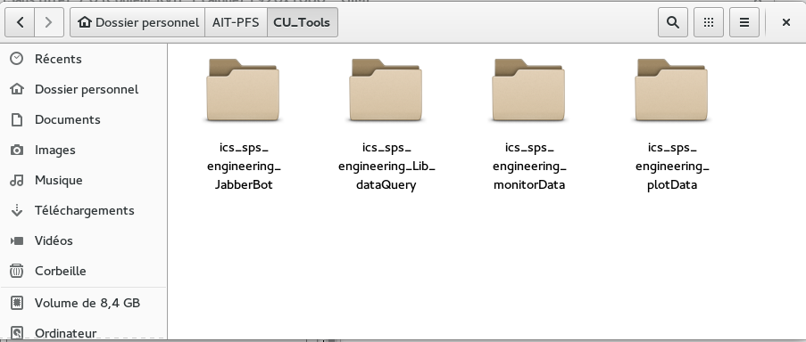

Setup¶
Prerequisites¶
Systems Minimum Requirements :
- OS : Linux (Tested on Fedora, Debian)
- PostgreSQL database
Real-time Data Monitoring Requirements :
- A server with MHS installed
- Install and configure the ics_archiver which will update the postgreSQL database
Python Packages¶
The GUIs run under Python 2.7 with additionals packages :
- Numpy
- Scipy
- Matplotlib
- PyQt5
- psycopg2
- jabberbot (Only for the JabberBot)
Project Structure¶
You can find the sources on the git
They are 4 main packages:
- ics_sps_engineering_Lib_dataQuery ( REQUIRED )
- ics_sps_engineering_plotData
- ics_sps_engineering_monitorData
- ics_sps_engineering_JabberBot
ics_sps_engineering_Lib_dataQuery is a generic library developped to answer to a common need of all GUIs.
It permit to simplify interaction with the database by the use of high level programming functions.
This library is required to be put in the same folder that the other packages (see pictures below)
The setup is now completed, you can switch to next chapter.